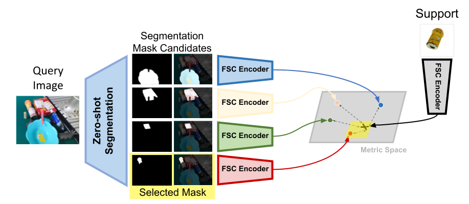
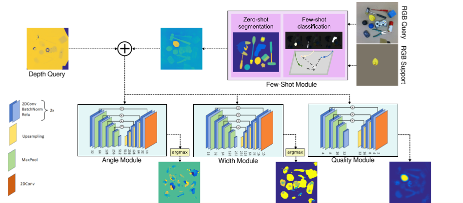

In this work, we propose an innovative model that combines the emerging capabilities of foundation models for segmentation with a high-performing few-shot classifier, adapting the latter to be effectively applied in the context of semantic segmentation. This segmentation framework is expressly designed to be embedded in a target-aware grasp synthesis model, as demonstrated by the proposed method. Our experiments highlight how the proposed model overcomes limitations in performance, offering advancements both in few-shot semantic segmentation and real-world grasp synthesis with semantic-awareness.
The core part is the few-shot segmentation module that leverages the capabilities of foundation models with the high accuracy of few-shot classification models.
The module can be included in grasp synthesis, in which it offers knowledge about the semantic given only few examples of the target.
Thank to the impressive results of the few-shot segmentation module, the grasp-shyntesis can generalize to new objects, not represented in the training set, with only few-examples
Thanks to example, it can also choose the most similar instance among different possible targets of te same class
It generalize to novel classes, even when the visual characteristics are different compared to the examples
@article{,
author = {AUTHORS},
title = {TITLE},
journal = {JOURNAL},
year = {YEAR},
}